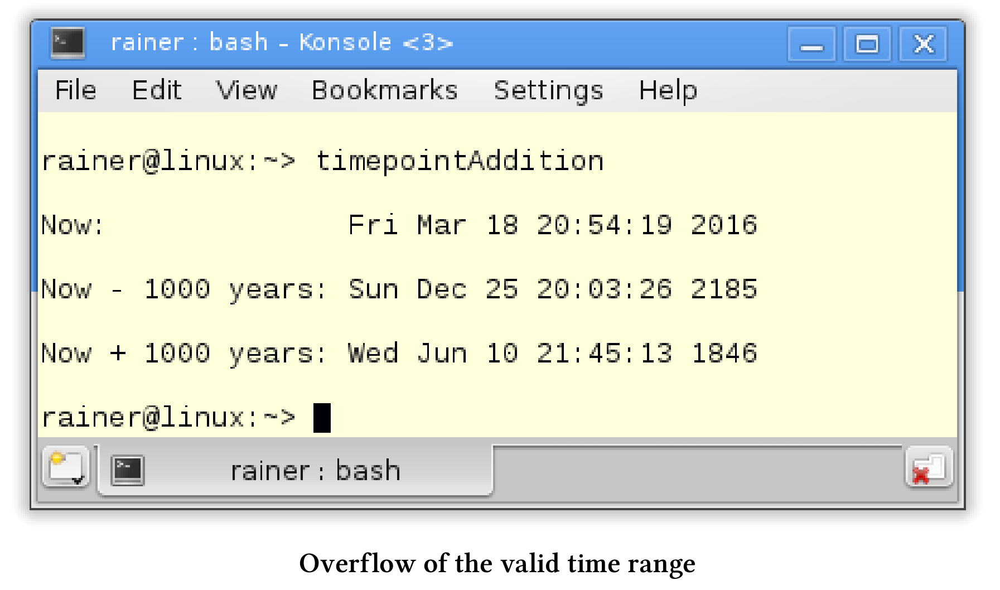

时间库
如果不写一些关于时间库的内容，那么使用现代C++处理并发性的书就显得不那么完整。时间库由三个部分组成：时间点、时间段和时钟。
时间点、时间段和时钟
时间点：由它的起始点(所谓的纪元epoch)和从纪元起经过的时间(表示为时间段)来表示。
时间段：是两个时间点之间的差值，它用时间刻度的数量来衡量。
时钟：由一个起点和一个时间刻度组成，此信息可以计算当前时间。
可以比较时间点。将时间段添加到某个时间点时，可以得到一个新的时间点。时钟周期是测量时间时钟的准确性。耶稣的出生在我的文明中作为一个开始的时间点，一年是一个典型的时间周期。
Dennis Ritchie，C语言的创造者于2011年去世，我用他的一生来说明这三个概念。为了简单起见，这里只使用年份。
这是他的一生。

耶稣的诞生是我们时代的起点，也就是纪元元年。1941年和2011年的时间是由纪元源时间点和时间段来定义的。从2011年减去1941年，得到的是时间段。所以，Dennis Ritchie去世时，享年70岁。
我们继续研究时间库的组件。
时间点
时间点std::chrono::time_point由起始点(epoch)和附加的时间段定义。类模板由两个组件：时钟和时间段。默认情况下，时间段是从时钟类派生出来的。
std::chrono::time_point类模板
template<
class Clock,
class Duration= typename Clock::duration
>
class time_point;
对于时钟来说，有以下四个特殊的时间点:
- epoch: 时钟的起点。
- now: 当前时间。
- min: 时钟可以统计的最小时间点。
- max: 时钟可以拥有的最大时间点。
最小和最大时间点的准确性取决于使用的时钟：std::system::system_clock, std::chrono::steady_clock或std::chrono::high_resolution_clock。
C++不保证时钟的准确性、起始点，还有有效时间范围。std::chrono::system_clock的起始时间通常是1970年1月1日，也就是所谓的UNIX元年，而std::chrono::high_resolution_clock具有最高的统计精度。
从时间点到日历时间
通过std::chrono::system_clock::to_time_t可以将一个内部使用std::chrono::system_clock的时间点，转换成一个类型为std::time_t的对象。通过函数std::gmtime对std::time_t对象进行进一步转换，可以得到以世界统一时间(UTC)表示的日历时间。最后，可以使用这个日历时间作为函数std::asctime的输入，以获得日历时间的文本表示。
显示日历时间
// timepoint.cpp
#include <chrono>
#include <ctime>
#include <iostream>
#include <string>
int main() {
std::cout << std::endl;
std::chrono::time_point<std::chrono::system_clock> sysTimePoint;
std::time_t tp = std::chrono::system_clock::to_time_t(sysTimePoint);
std::string sTp = std::asctime(std::gmtime(&tp));
std::cout << "Epoch: " << sTp << std::endl;
tp = std::chrono::system_clock::to_time_t(sysTimePoint.min());
sTp = std::asctime(std::gmtime(&tp));
std::cout << "Time min: " << sTp << std::endl;
tp = std::chrono::system_clock::to_time_t(sysTimePoint.max());
sTp = std::asctime(std::gmtime(&tp));
std::cout << "Time max: " << sTp << std::endl;
sysTimePoint = std::chrono::system_clock::now();
tp = std::chrono::system_clock::to_time_t(sysTimePoint);
sTp = std::asctime(std::gmtime(&tp));
std::cout << "Time now: " << sTp << std::endl;
}
程序会显示std::chrono::system_clock的有效范围。我的Linux PC上，std::chrono::system_clock以UNIX元年作为起始点，时间点可以在1677年到2262年之间。

可以将时间段添加到时间点上，以获得新的时间点。在有效时间范围之外添加时间段，是未定义行为。
跨越有效的时间范围
下面的示例使用当前时间并加减1000年。为了简单起见，我忽略闰年，假设一年有365天。
// timepointAddition.cpp
#include <chrono>
#include <ctime>
#include <iostream>
#include <string>
using namespace std::chrono;
using namespace std;
string timePointAsString(const time_point<system_clock>& timePoint) {
time_t tp = system_clock::to_time_t(timePoint);
return asctime(gmtime(&tp));
}
int main() {
cout << endl;
time_point<system_clock> nowTimePoint = system_clock::now();
cout << "Now: " << timePointAsString(nowTimePoint) << endl;
const auto thousandYears = hours(24 * 365 * 1000);
time_point<system_clock> historyTimePoint = nowTimePoint - thousandYears;
cout << "Now - 1000 years: " << timePointAsString(historyTimePoint) << endl;
time_point<system_clock> futureTimePoint = nowTimePoint + thousandYears;
cout << "Now + 1000 years: " << timePointAsString(futureTimePoint) << endl;
}
程序的输出显示，第25行和第28行中时间点的溢出，将导致错误的结果。从现在的时间点减去1000年，获得了将来的时间点；在当前时间点上加上1000年，得到了过去的时间点。

两个时间点之间的差值是时间段。时间段支持基本的算法，可以在不同的时间刻度下进行显示。
时间段
std::chrono::duration是一个类模板， Rep类型的计次数和计次周期组成。
std::chrono::duration类模板
template<
class Rep,
class Period = std::ratio<1>
> class duration;
计次周期默认长度为std::ratio<1>。std::ratio<1>表示1秒，也可以写成std::ratio< 1,1 >，以此类推，std::ratio<60>是一分钟，std::ratio<1,1000> 是1毫秒。当Rep类型是浮点数时，可以使用它来保存时间刻度的分数形式。
C++11预定义了几个重要的时间单位:
typedef duration<signed int, nano> nanoseconds;
typedef duration<signed int, micro> microseconds;
typedef duration<signed int, milli> milliseconds;
typedef duration<signed int> seconds;
typedef duration<signed int, ratio< 60>> minutes;
typedef duration<signed int, ratio<3600>> hours;
从UNIX元年(1970年1月1日)到现在有多少时间了?通过不同时间的类型别名，我可以很容易地回答这个问题。下面的例子中，继续忽略闰年，假设一年有365天。
// timeSinceEpoch.cpp
#include <chrono>
#include <iostream>
using namespace std;
int main() {
cout << fixed << endl;
cout << "Time since 1.1.1970:\n" << endl;
const auto timeNow = chrono::system_clock::now();
const auto duration = timeNow.time_since_epoch();
cout << duration.count() << " nanoseconds " << endl;
typedef chrono::duration<long double, ratio<1, 1000000>> MyMicroSecondTick;
MyMicroSecondTick micro(duration);
cout << micro.count() << " microseconds" << endl;
typedef chrono::duration<long double, ratio<1, 1000>> MyMilliSecondTick;
MyMilliSecondTick milli(duration);
cout << milli.count() << " milliseconds" << endl;
typedef chrono::duration<long double> MySecondTick;
MySecondTick sec(duration);
cout << sec.count() << " seconds " << endl;
typedef chrono::duration<double, ratio<60>> MyMinuteTick;
MyMinuteTick myMinute(duration);
cout << myMinute.count() << " minutes" << endl;
typedef chrono::duration<double, ratio<60 * 60>> MyHourTick;
MyHourTick myHour(duration);
cout << myHour.count() << " hours" << endl;
typedef chrono::duration<double, ratio<60 * 60 * 24 * 365>> MyYearTick;
MyYearTick myYear(duration);
cout << myYear.count() << " years" << endl;
typedef chrono::duration<double, ratio<60 * 45>> MyLessonTick;
MyLessonTick myLesson(duration);
cout << myLesson.count() << " lessons" << endl;
cout << endl;
}
时间长度是微秒(第18行)、毫秒(第22行)、秒(第26行)、分钟(第30行)、小时(第34行)和年(第38行)。另外，我在第42行定义了德国学校单节课的时长(45分钟)。

计算时间
时间单位表示的时间支持基本的算术运算，可以用一个数字乘以或除以一个时间段。当然，也可以比较时间单位表示的时间，所有这些计算和比较都是基于时间单位的。
在C++14标准中，更加方便。C++14标准支持时间段的文字表示。
| 类型 | 后缀 | 示例 |
|---|---|---|
| std::chrono::hours | h | 5h |
| std::chrono::minutes | min | 5min |
| std::chrono::seconds | s | 5s |
| std::chrono::milliseconds | ms | 5min |
| std::chrono::microseconds | us | 5us |
| std::chrono::nanoseconds | ns | 5ns |
我17岁的儿子Marius，在学校的一天中要花多少时间?我在下面的示例中，回答了这个问题，并以不同的时间段格式显示结果。
// schoolDay.cpp
#include <iostream>
#include <chrono>
using namespace std::literals::chrono_literals;
using namespace std::chrono;
using namespace std;
int main() {
cout << endl;
constexpr auto schoolHour = 45min;
constexpr auto shortBreak = 300s;
constexpr auto longBreak = 0.25h;
constexpr auto schoolWay = 15min;
constexpr auto homework = 2h;
constexpr auto schoolDaySec = 2 * schoolWay + 6 * schoolHour + 4 * shortBreak +
longBreak + homework;
cout << "School day in seconds: " << schoolDaySec.count() << endl;
constexpr duration<double, ratio<3600>> schoolDayHour = schoolDaySec;
constexpr duration<double, ratio<60>> schoolDayMin = schoolDaySec;
constexpr duration<double, ratio<1, 1000>> schoolDayMilli = schoolDaySec;
cout << "School day in hours: " << schoolDayHour.count() << endl;
cout << "School day in minutes: " << schoolDayMin.count() << endl;
cout << "School day in milliseconds: " << schoolDayMilli.count() << endl;
cout << endl;
}
有一节德语课的时间(第14行)，一个短暂的休息(第16行)，一个长时间的休息(第17行)，Marius去学校的路(第19行)上花费的时间，以及做家庭作业(第20行)的时间。计算结果schoolDaysInSeconds(第22行)在编译时可用。

编译时的计算
时间常量(第14 - 20行)、第22行中的
schoolDaySec和各种时间段(第28 - 30行)都是常量表达式(constexpr)。因此，所有值都可在编译时获得，只有输出是在运行时执行。
报时的准确性取决于所用的时钟。C++中，有三种时钟std::chrono::system_clock, std::chrono::steady_clock和std::chrono::high_resolution_clock。
时钟
三种不同类型的时钟之间有什么区别?
std::chrono::sytem_clock: 是系统范围内的实时时钟(挂壁钟)。该时钟具有to_time_t和from_time_t的辅助功能，可以将时间点转换为日历时间。std::chrono::steady_clock: 是唯一提供保证的时钟，并且不能调整它。因此，std::chrono::steady_clock是测量时间间隔的首选时钟。std::chrono::high_resolution_clock：是精度最高的时钟，但它可以只是时钟std::chrono::system_clock或std::chrono::steady_clock的别名。
无保证的准确性、起始点和有效的时间范围
C++标准不保证时钟的精度、起始点和有效时间范围。通常，
std::chrono:system_clock的起始点是1970年1月1日，也就是所谓的UNIX元年，而std::chrono::steady_clock的起始点则是PC的启动时间。
准确性和稳定性
知道哪些时钟是稳定的，以及它们提供的精度是很有趣的事情。稳定意味着时钟不能调整，可以直接从时钟中得到答案。
三个时钟的准确性和稳定性
// clockProperties.cpp
#include <chrono>
#include <iomanip>
#include <iostream>
using namespace std::chrono;
using namespace std;
template < typename T>
void printRatio() {
cout << " precision: " << T::num << "/" << T::den << " second " << endl;
typedef typename ratio_multiply<T, kilo>::type MillSec;
typedef typename ratio_multiply<T, mega>::type MicroSec;
cout << fixed;
cout << " " << static_cast<double>(MillSec::num) / MillSec::den
<< " milliseconds " << endl;
cout << " " << static_cast<double>(MicroSec::num) / MicroSec::den
<< " microseconds " << endl;
}
int main() {
cout << boolalpha << endl;
cout << "std::chrono::system_clock: " << endl;
cout << " is steady: " << system_clock::is_steady << endl;
printRatio<chrono::system_clock::period>();
cout << endl;
cout << "std::chrono::steady_clock: " << endl;
cout << " is steady: " << chrono::steady_clock::is_steady << endl;
printRatio<chrono::steady_clock::period>();
cout << endl;
cout << "std::chrono::high_resolution_clock: " << endl;
cout << " is steady: " << chrono::high_resolution_clock::is_steady
<< endl;
printRatio<chrono::high_resolution_clock::period>();
cout << endl;
}
在第27行、第33行和第39行显示每个时钟是否稳定。函数printRatio(第10 -20行)比较难懂。首先，以秒为单位显示时钟的精度。此外，使用函数模板std::ratio_multiply，以及常量std::kilo和std::mega来将单位调整为以浮点数显示的毫秒和微秒。您可以通过cppreference.com获得计算时间在编译时的更多详细信息。
Linux上的输出与Windows上的不同。Linux上，std::chrono::system_clock要精确得多；Windows上，std::chrono::high_resultion_clock是稳定的。


虽然C++标准没有指定时钟的纪元，但是可以通过计算得到。
纪元元年
由于辅助函数time_since_epoch，每个时钟返回显示自元年以来已经过了很多时间。
计算每个时钟的元年
// now.cpp
#include <chrono>
#include <iomanip>
#include <iostream>
using namespace std::chrono;
template < typename T>
void durationSinceEpoch(const T dur) {
std::cout << " Counts since epoch: " << dur.count() << std::endl;
typedef duration<double, std::ratio<60>> MyMinuteTick;
const MyMinuteTick myMinute(dur);
std::cout << std::fixed;
std::cout << " Minutes since epoch: " << myMinute.count() << std::endl;
typedef duration<double, std::ratio<60 * 60 * 24 * 365>> MyYearTick;
const MyYearTick myYear(dur);
std::cout << " Years since epoch: " << myYear.count() << std::endl;
}
int main() {
std::cout << std::endl;
system_clock::time_point timeNowSysClock = system_clock::now();
system_clock::duration timeDurSysClock = timeNowSysClock.time_since_epoch();
std::cout << "system_clock: " << std::endl;
durationSinceEpoch(timeDurSysClock);
std::cout << std::endl;
const auto timeNowStClock = steady_clock::now();
const auto timeDurStClock = timeNowStClock.time_since_epoch();
std::cout << "steady_clock: " << std::endl;
durationSinceEpoch(timeDurStClock);
std::cout << std::endl;
const auto timeNowHiRes = high_resolution_clock::now();
const auto timeDurHiResClock = timeNowHiRes.time_since_epoch();
std::cout << "high_resolution_clock: " << std::endl;
durationSinceEpoch(timeDurHiResClock);
std::cout << std::endl;
}
变量timeDurSysClock(第26行)、timeDurStClock(第33行)和timeDurHiResClock(第40行)包含从对应时钟的起始点经过的时间。如果不使用auto自动类型推断，则写入时间点和时间段的确切类型将非常冗长。函数durationSinceEpoch(第9 - 19行)中，以不同的分辨率显示时间持续时间。首先，显示时间刻度的数量(第11行)，然后显示分钟的数量(第15行)，最后显示自epoch以来的年份(第18行)。所有值都依赖于所使用的时钟。为了简单起见，忽略闰年，假设一年有365天。
同样，Linux和Windows上的结果也是不同的。


为了得出正确的结论，我得提一下，Linux PC已经运行了大约5小时(305分钟)，而Windows PC已经运行了超过6小时(391分钟)。
我的Linux PC上，std::chrono::system_clock和std::chrono::high_resolution_clock以UNIX元年作为起始点。std::chrono::steady_clock的起始点是我电脑的启动时间。虽然std::high_resolution_clock是Linux上的std::system_clock的别名，但std::high_resolution_clock似乎是Windows上的std::steady_clock的别名，这一结论与前一小节的精度和稳定性结果相一致。
有了时间库，可以限制让线程进入睡眠状态的时限。休眠和等待函数的参数，可以是时间点或是时间段。
休眠和等待
时间概念是多线程组件(如线程、锁、条件变量和future)的一个重要特性。
惯例
多线程中处理时间的方法遵循一个简单的惯例。以_for结尾的方法必须按时间长度进行参数化；以_until结尾的方法，指定一个时间点。下面简要概述了处理睡眠、阻塞和等待的方法。
| 多线程组件 | _until | _for |
|---|---|---|
| std::thread th | th.sleep_until(in2min) | th.sleep_for(2s) |
| std::unique_lock lk | lk.try_lock_until(in2min) | lk.try_lock(2s) |
| std::condition_variable cv | cv.wait_until(in2min) | cv.wait_for(2s) |
| std::future fu | fu.wait_until(in2min) | fu.wait_for(2s) |
| std::shared_future shFu | shFu.wait(in2min) | shFu.wait_for(2s) |
in2min表示未来2分钟的时间，2s是时间段2秒。虽然使用自动初始化的时间点 in2min，以下的表达式仍然冗长:
定义一个时间点
auto in2min= std::chrono::steady_clock::now() + std::chrono::minutes(2);
当使用时间单位时，C++14的时间文字可以帮助我们：2s就代表2秒。
接下来，让我们看看不同的等待策略。
各种等待策略
以下程序的主要思想是，promise提供四种共享future的结果。因为多个shared_future可以等待相同的promise通知，所以没问题。每个future都有不同的等待策略，并且promise和future在不同的线程中执行。为了简单起见，本小节中只讨论一个正在等待的线程。
下面是四个等待线程的策略:
- consumeThread1: 为promise的结果等待4秒。
- consumeThread2: 为promise的结果等待20秒。
- consumeThread3: 查询promise的结果，并返回休眠700毫秒。
- consumeThread4: 向对方询问结果，然后继续休眠。它的休眠时间从1毫秒开始，每次翻倍。
程序如下。
各种等待策略
// sleepAndWait.cpp
#include <utility>
#include <iostream>
#include <future>
#include <thread>
#include <utility>
using namespace std;
using namespace std::chrono;
mutex coutMutex;
long double getDifference(const steady_clock::time_point& tp1,
const steady_clock::time_point& tp2) {
const auto diff = tp2 - tp1;
const auto res = duration <long double, milli>(diff).count();
return res;
}
void producer(promise<int>&& prom) {
cout << "PRODUCING THE VALUE 2011\n\n";
this_thread::sleep_for(seconds(5));
prom.set_value(2011);
}
void consumer(shared_future<int> fut,
steady_clock::duration dur) {
const auto start = steady_clock::now();
future_status status = fut.wait_until(steady_clock::now() + dur);
if (status == future_status::ready) {
lock_guard<mutex> lockCout(coutMutex);
cout << this_thread::get_id() << " ready => Result: " << fut.get()
<< endl;
}
else {
lock_guard<mutex> lockCout(coutMutex);
cout << this_thread::get_id() << " stopped waiting." << endl;
}
const auto end = steady_clock::now();
lock_guard<mutex> lockCout(coutMutex);
cout << this_thread::get_id() << " waiting time: "
<< getDifference(start, end) << " ms" << endl;
}
void consumePeriodically(shared_future<int> fut) {
const auto start = steady_clock::now();
future_status status;
do {
this_thread::sleep_for(milliseconds(700));
status = fut.wait_for(seconds(0));
if (status == future_status::timeout) {
lock_guard<mutex> lockCout(coutMutex);
cout << " " << this_thread::get_id()
<< " still waiting." << endl;
}
if (status == future_status::ready) {
lock_guard<mutex> lockCout(coutMutex);
cout << " " << this_thread::get_id()
<< " waiting done => Result: " << fut.get() << endl;
}
} while (status != future_status::ready);
const auto end = steady_clock::now();
lock_guard<mutex> lockCout(coutMutex);
cout << " " << this_thread::get_id() << " waiting time: "
<< getDifference(start, end) << " ms" << endl;
}
void consumeWithBackoff(shared_future<int> fut) {
const auto start = steady_clock::now();
future_status status;
auto dur = milliseconds(1);
do {
this_thread::sleep_for(dur);
status = fut.wait_for(seconds(0));
dur *= 2;
if (status == future_status::timeout) {
lock_guard<mutex> lockCout(coutMutex);
cout << " " << this_thread::get_id()
<< " still waiting." << endl;
}
if (status == future_status::ready) {
lock_guard<mutex> lockCout(coutMutex);
cout << " " << this_thread::get_id()
<< " waiting done => Result: " << fut.get() << endl;
}
} while (status != future_status::ready);
const auto end = steady_clock::now();
lock_guard<mutex> lockCout(coutMutex);
cout << " " << this_thread::get_id()
<< " waiting time: " << getDifference(start, end) << " ms" << endl;
}
int main() {
cout << endl;
promise<int> prom;
shared_future<int> future = prom.get_future();
thread producerThread(producer, move(prom));
thread consumerThread1(consumer, future, seconds(4));
thread consumerThread2(consumer, future, seconds(20));
thread consumerThread3(consumePeriodically, future);
thread consumerThread4(consumeWithBackoff, future);
consumerThread1.join();
consumerThread2.join();
consumerThread3.join();
consumerThread4.join();
producerThread.join();
cout << endl;
}
我在主函数中创建promise(第98行)，使用promise创建关联的future(第99行)，并将promise移动到一个单独的线程(第100行)。因为promise不支持复制语义，必须将其移动到线程中。这对于共享future来说是不必要的(第102 - 105行)，它们支持复制语义，因此可以复制。
讨论线程的工作包之前，简单介绍一下辅助函数getDifference(第14 - 19行)。该函数接受两个时间点，并以毫秒为单位返回这两个时间点之间的时间段。
那创建的五个线程呢?
- producerThread: 执行函数生成器(第21 - 25行)，并在5秒休眠后发布其结果2011。这是future正在等待的结果。
- consumerThread1: 执行函数
consumer函数(第27 - 44行)。线程最多等待4秒(第30行)才继续工作。这段等待的时间不够长，无法从promise中得到结果。 - consumerThread2: 执行
consumer函数(第27 - 44行)。线程在继续工作之前最多等待20秒。 - consumerThread3: 定期执行
consume函数(第46 - 67行)。休眠700毫秒(第50行)，并请求promise的结果(第60行)。因为第51行std::chrono::seconds(0)，所以不需要等待。如果计算结果可用，将第60行在显示。 - consumerThread4: 执行
consumeWithBackoff函数(第69 - 92行)。在第一个迭代1秒内休眠，并在每个迭代中将休眠时间加倍。否则，它的策略就与consumerThread3的策略差不多了。
现在来同步程序。确定当前时间的时钟和std::cout都是共享变量，但不需要同步。首先，调用std::chrono::steady_clock::now()是线程安全的(第30行和第40行)；其次，C++运行时保证这些字符被写入std::cout是线程安全的。这里，只使用了std::lock_guard来保护std::cout(在第32、37和41行)。
尽管线程逐个地向std::cout写入数据，但是输出并不容易理解。

第一个输出来自于promise。左边的输出来自future。首先，consumerThread4询问结果，8个字符缩进输出，consumerThread4也显示它的id，consumerThread3紧跟其后，4个字符缩进它的输出，consumerThread1和consumerThread2的输出没有缩进。
- consumeThread1: 等待4000.18ms，但是没有得到结果。
- consumeThread2: 在等待5000.3ms后获取结果，但其等待时间最长可达20秒。
- consumeThread3: 在等待5601.76ms后获取结果。也就是5600ms= 8 * 700ms。
- consumeThread4: 在等待8193.81ms后的获取结果。换句话说，它等待的时间达到了3s之久。